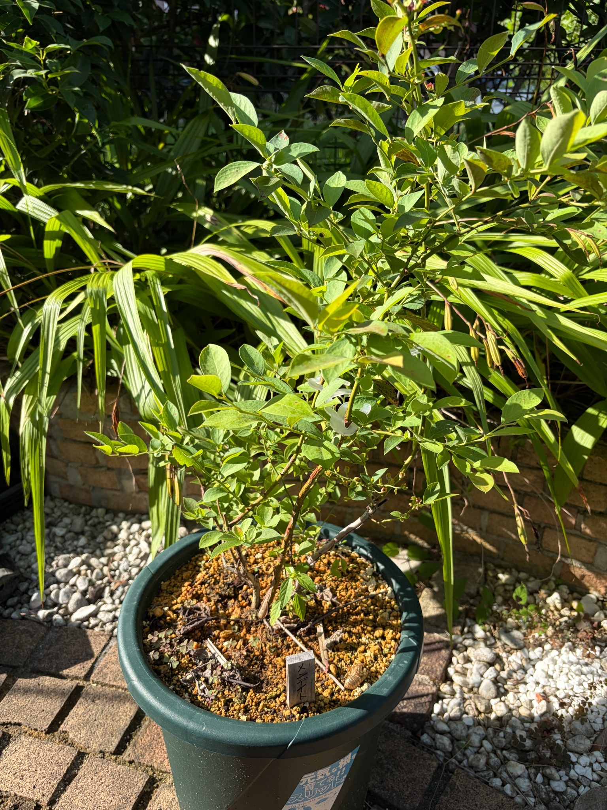

2026/09/22 メンデイト 収穫後の枝葉と、秋へ向かう鉢植えの姿
2026年9月22日。前回の9月5日から17日がたちました。
今年はクライマックス、プレミア、メンデイトの3品種とも実をつけ、収穫したブルーベリーをヨーグルトに混ぜて楽しむことができました。実を食べる楽しみを味わった後も、庭ではそれぞれの株が季節を重ねています。
メンデイトは、昨年12月16日に植え付けた濃緑色のスリット鉢で育てています。植え付けから約9か月が過ぎ、今は褐色の枝から緑色や黄緑色の葉が広がっています。
今回は、鉢と株元から上へ続く枝葉を一緒に残しました。実を収穫したことに加えて、その後にどんな葉を残し、どんな枝ぶりで秋を迎えているのかも、続けて記録していきたいと思います。
9月5日から続く、収穫後のメンデイト
前回は、初めての収穫を楽しめたことと、夏を過ごした枝葉の様子を記録しました。
今回も緑の葉が目立ちます。枝先へ向かって葉がつき、上へ伸びる枝と左右へ広がる枝が重なっています。葉の間からは枝の線も見え、株元から上へつながる形が分かります。
9月5日は枝葉を近くから写していましたが、今回は鉢も含めて眺められる姿になりました。同じメンデイトでも、少し離れて見ると、枝の傾きや左右の広がりが印象に残ります。
17日間でどれだけ伸びたかという数字はありませんが、収穫後もこうして葉を残している姿を、前回からつながる一日の記録として残します。

上へ伸びる枝と、左右へ広がる枝
中央付近には上へ向かう枝があり、その周りから細い枝が斜め上や左右へ伸びています。
右側へ大きく広がる枝もあれば、左側へ低めに伸びる枝もあります。枝が同じ方向にそろっているわけではなく、それぞれが違う角度で伸び、その先に葉をつけています。
株の下側では褐色の枝がよく見え、上の方では細い緑色の枝と葉が重なります。下から上へ目を移すと、しっかりした枝の骨組みと、その先の細かな枝葉の両方を感じます。
葉が重なる部分には緑のまとまりがあり、枝の間が空いているところには向こう側の景色が見えます。葉の多いところと枝がよく見えるところが組み合わさって、今のメンデイトの姿になっています。
緑色と黄緑色が混じる葉
葉には、落ち着いた緑色のものと、明るい黄緑色のものがあります。黄色みを帯びた葉も混じり、一株の中でも色がそろっていません。
日が当たる葉は明るく、葉脈や表面の細かな濃淡が目に入ります。少し奥にある葉は暗めに見え、葉の向きによっても印象が変わります。
枝先付近には小さな葉が集まり、その下には大きめの葉が広がっています。細い枝に沿って葉が並び、先端へ向かう形を目で追えます。
明るい色の葉だけを見ていると柔らかな印象ですが、その中には濃い緑色の葉もあります。こうした色の混じり方も、この日の姿として残しておきたいところです。
一部の葉には、黄ばみや赤褐色の斑点もあります
緑の葉が広がる一方で、一部には黄色みが強い葉や、赤褐色の小さな斑点が見える葉もあります。葉先や縁の色が変わっているところもあり、葉によって状態に違いがあります。
株全体を眺めたときには緑が目に入りますが、近くの葉を見ると、色むらや部分的な傷みも気になります。
昨年12月の色づいた姿を覚えているので、これからの葉色の変化も楽しみです。ただ、今ある黄ばみや斑点を、すべて秋の色づきとして受け止めることはできません。
緑を保っている葉と、色の変わっている葉。それぞれがその後どうなるか、同じ株の中で見ていきたいと思います。
実を収穫できたことはうれしい出来事でしたが、収穫後の葉の状態にも目を向けながら育てていきたいです。
葉の向きにも、それぞれ違いがあります
横へ広がる葉、斜め上を向く葉、先が少し下がる葉が混じっています。
表側が広く見える葉では緑の濃淡が分かりやすく、裏側を向いた葉は白っぽい緑色に見えます。枝に沿って葉の向きが変わるので、同じ枝でも明るいところと暗いところができます。
細長く見える葉もあれば、幅のある葉もあり、重なり方によって形の印象も変わります。
葉が一枚ずつ違う方向を向いていることで、枝葉全体に奥行きが感じられます。果実を眺めていた時期とは違う、葉そのものを見る楽しみがあります。
褐色の株元から、細い枝へつながっています
鉢の中央付近からは複数の褐色の枝が立ち上がっています。まっすぐ上へ向かう部分もあれば、途中から斜めに分かれる部分もあります。
株元に近い枝は表面が褐色で、その先には緑色や赤みを帯びた細い枝が続いています。太さも色も一様ではなく、枝ごとの違いが見えます。
葉に目が向きやすい時期ですが、下側の枝を眺めると、株全体を支える形がよく分かります。昨年、鉢へ植え付けたときから見てきた枝の骨組みを、今もたどることができます。
中央付近には淡い色の留め具も見えます。枝の分かれ方や重なりとともに、今の株の姿を覚えておく目印になっています。
細い枝の小さな部分も、これから見ていきたいです
株の下側から右側にかけて、細い枝に小さなまとまりがついているところがあります。
大きな葉の陰に隠れやすい部分ですが、枝をたどっていくと、こうした細かな形にも目が留まります。
今はその一つひとつを花芽や実として数えるより、枝先や葉の付け根が、これからどのように変わるかを楽しみにしておきたいと思います。
今年は実を収穫できたので、次の季節へ向かう枝の変化にも関心が向きます。収穫した喜びが、実のない時期の観察にもつながっています。
鹿沼土が広がる鉢の表面
鉢の表面には、黄土色の鹿沼土が広がっています。
日が当たる粒は明るく見え、株元や枝の陰になっているところは濃く見えます。粒の間には枯れ葉や細い枝があり、小さな草も生えています。
植え付けた頃のすっきりした表面から、季節を過ごした鉢の表情に変わってきました。枝葉だけでなく、こうした株元の様子にも時間の積み重なりを感じます。
鹿沼土の上にある葉には、形や大きさの違うものが混じっています。周囲にも植物があるので、メンデイトの葉だけが落ちているわけではなさそうです。
鉢の中の根は見えませんが、地上に広がる枝葉と、鹿沼土の見える株元を一緒に眺めながら、これからの姿を追っていきたいと思います。
濃緑色のスリット鉢と、木製の名札
株元の手前には、「メンデイト」と書いた木製の名札があります。
昨年12月に植え付けたときから、濃緑色のスリット鉢とこの名札を一緒に記録してきました。葉色や枝の見え方が変わっても、同じ株の季節をたどれることがうれしいです。
購入したときの黒い育苗ポットから、この大きな鉢へ植え替えたことも思い出します。その後に冬を越し、春から夏を過ごして、今年は実を味わうことができました。
鉢の上に広がる今の枝葉を見ると、苗を迎えた日から今日までがつながって感じられます。
地植えのクライマックス、プレミアとともに
同じ日に迎えたクライマックスとプレミアは地植え、メンデイトはスリット鉢で育てています。
今年は3品種とも実をつけてくれました。育てる場所は違っても、収穫した実を食べる楽しみにつながったことが、何よりうれしいです。
今はそれぞれの枝ぶりや葉色を眺める時期になりました。メンデイトには、鉢の中から上へ立ち上がり、左右へ枝を広げる姿があります。
品種や植え方が違えば、見えてくる姿にも違いがあります。それぞれを同じ形にそろえて比べるより、一株ずつの変化を残していきたいと思います。
3品種を一緒に迎えたことで、実を食べる楽しみだけでなく、季節ごとの姿を見比べる楽しみも増えました。
緑の葉を残した、9月22日の姿
昨年12月の植え付けから約9か月。メンデイトは初めての夏と収穫を経て、9月下旬を迎えました。
今は緑色や黄緑色の葉が枝に広がり、その中に黄色みのある葉や、部分的に赤褐色へ変わった葉も混じっています。株元には褐色の枝があり、足元には鹿沼土と木製の名札が見えます。
収穫の喜びを味わった後も、葉や枝には見ておきたいところがあります。冬の色づいた姿を覚えているからこそ、これから秋が深まるにつれて、どのような色へ変わっていくのかも楽しみです。
2026年9月22日。実を楽しんだ夏から、次の季節へ向かうメンデイトの姿を残します。